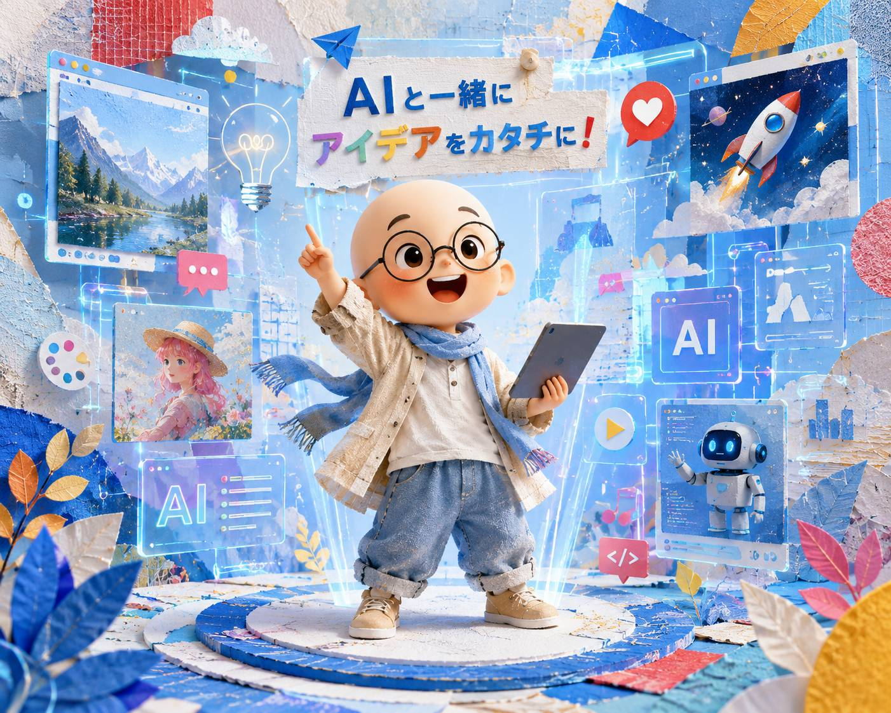

AI画像生成・初心者向け
はじめの
画像実践ガイド
難しい言葉を覚えるより、まず一枚。
相談しながら、少しずつ近づけていきます。

この表紙に使った2つの参考画像
表紙の実プロンプト
AI部の初心者向け資料の表紙用の画像を作成してください。 目的は、「AIでこんな画像が作れるんだ」と初心者にも直感的に伝わる、魅力的で印象的なビジュアルにすることです。 主役は、添付したキャラクターです。 このキャラクターの以下の特徴は維持してください。 - スキンヘッド - 丸メガネ - デフォルメされた可愛い頭身バランス - 顔の雰囲気 キャラクターは、楽しそうでワクワクしている様子にしてください。 構図は、キャラクターの全身が見えるようにしてください。 背景は、未来的なデジタル空間にしてください。 ネオンが光る未来感のある雰囲気にしつつ、初心者にも親しみやすい、明るく楽しい印象にしてください。 色合いは、全体を薄いブルー基調にしてください。 そのうえで、明るくカラフルな配色にし、ポイントカラーとして赤を入れてください。 差し色として、他のカラフルな色を使っても構いません。 表現スタイルは、単なる平面的なイラストではなく、参考画像のような立体感のあるアート表現にしてください。 特に以下の要素を取り入れてください。 - コラージュのような重なり - 凹凸を感じる立体感 - 紙や布のような質感 - アート作品のような奥行きのある表現 ただし、主役のキャラクターは見失わないように、分かりやすく目立たせてください。 複雑になりすぎず、「すごい」「楽しそう」「こんな画像が作れるんだ」と感じられる表紙向けビジュアルにしてください。 服装は固定しなくて構いません。 必要であれば、未来感と自然さが両立するように、麻などの自然素材を感じさせる服にアレンジしても構いません。 全体として、初心者向け資料の表紙にふさわしい、親しみやすさ、楽しさ、未来感、アート性を両立した画像にしてください。
02 / 16
伝える内容を、3段階で考えてみる
同じ森のカフェを題材に、どんな言葉を足せるか見てみましょう。
実際に使ったプロンプト
森の中のカフェを、自然な写真として作ってください。 横長16:9。
実際に使ったプロンプト
用途： ウェブサイトで森のカフェを紹介するための横長画像。 主役： 小さな木造カフェ。 動作・状態： 窓辺で一人の成人女性がコーヒーを飲んでいる。 場所： 秋の森の中。 自然な写真として作ってください。 横長16:9。
実際に使ったプロンプト
用途： ウェブサイトで森のカフェを紹介するための見出し画像。横長16:9。 主役： 秋の森に建つ、小さな木造カフェ。 動作・状態： 窓辺で一人の成人女性が、白い陶器のカップでコーヒーを飲んでいる。 場所： 深い緑と紅葉が混ざる、静かな秋の森。 構図： 人の目の高さから、少し離れた位置で建物全体を見る。 カフェを画面左寄りに置き、右側には見出しを載せられる静かな余白を残す。 光： 夕方の柔らかい自然光。 カフェの窓から暖かなオレンジ色の明かりが漏れている。 色： 深い緑、自然な茶色、暖かなオレンジを中心にする。 素材： 木の外壁、石の小道、透明な窓ガラスの質感が分かるようにする。 固定条件： 文字、ロゴ、看板の文字、ほかの人物、車は入れない。 自然で落ち着いた写真として作ってください。
長さが答えではありません。増えた言葉が、AIの判断材料になります。
03 / 16
まずは、この4つから
全部決まっていなくても大丈夫。分かるところから伝えます。
04 / 16
もっと近づけたいときの、5つ
「どこから見るか」を伝えるだけでも、かなり変わります。
05 / 16
AIに伝えられる、9つの視点
チェックリストではなく、考えるための引き出しです。
全部入れなくても大丈夫。今回大事なものだけ選びましょう。
06 / 16
作る画像で、大事な視点は変わる
商品写真
構図・光・素材を丁寧に
物語のある絵
主役・動作・場所・色を大切に
SNSや広告
用途・余白・色・固定条件を先に
固定の正解はありません。「今回は何が大事？」と考えればOKです。
07 / 16
同じ内容でも、見せ方を変えられる
「何を描くか」は同じ。変えるのは「どう表現するか」です。
写真版の実プロンプト
用途：ウェブサイトで森のカフェを紹介するための見出し画像。横長16:9。 主役：秋の森に建つ、小さな木造カフェ。 動作・状態：窓辺で一人の成人女性が、白い陶器のカップでコーヒーを飲んでいる。 場所：深い緑と紅葉が混ざる、静かな秋の森。 構図：人の目の高さから少し離れ、建物全体を見る。カフェを左寄りにし、右側に見出し用の静かな余白を残す。 光：夕方の柔らかい自然光。窓から暖かなオレンジ色の明かり。 色：深い緑、自然な茶色、暖かなオレンジ。 素材：木の外壁、石の小道、透明な窓ガラス。 固定条件：文字、ロゴ、看板の文字、ほかの人物、車は入れない。 自然で落ち着いた写真として作ってください。
イラスト版の実プロンプト
添付画像の内容、人物、建物、配置、構図は保ってください。 表現方法だけを、柔らかな手描きの絵本イラストに変更してください。 落ち着いた線、少し紙の質感が感じられる色面、暖かな秋の色合いで表現してください。 人物の位置、カフェの形、窓、石の小道、右側の余白は変更しないでください。 文字やロゴは入れないでください。
ポスター版の実プロンプト
添付画像の内容、人物、建物、配置、構図は保ってください。 表現方法だけを、余白を活かしたミニマルな旅行広告ポスター風のデザインに変更してください。 細かな写実表現を減らし、深い緑、茶色、暖かなオレンジの大きな色面と、単純化した形で表現してください。 人物の位置、カフェの形、窓、石の小道、右側の余白は変更しないでください。 目に見える文字、タイトル、ロゴは入れないでください。
08 / 16
AIごとの見え方を、複数例で比べる
同じテーマでも、構図や色、雰囲気はさまざまです。ここでは2組の教材例を見比べます。
比較例A｜森の中のカフェ
実際に使った共通プロンプト
比較例B｜AI初心者向けの表紙
実際に使った共通プロンプト
勝ち負けではありません。生成するたびにも結果は変わります。イメージに近いものを選べばOKです。
09 / 16
無料枠だから、作る前に相談する
うまく言葉にできなくても大丈夫。画像を作る前に、AIと一緒に整理できます。
作りたいものを話す
大事な視点を選ぶ
完成した指示文を確認
そのあと画像を作る
相談用の実プロンプト
作りたい画像について一緒に考えてください。 私は画像生成の初心者です。 一度にたくさん質問せず、答えやすい質問を一つずつしてください。 次の9つの視点から、今回の画像に必要なものを整理してください。 1. 用途 2. 主役 3. 動作・状態 4. 場所 5. 構図 6. 光 7. 色 8. 素材 9. 固定条件 9項目すべてを無理に使う必要はありません。 今回の画像にとって重要なものを一緒に選んでください。 質問が終わったら、ChatGPTまたはGeminiへそのまま入力できる、分かりやすい日本語の画像生成指示にまとめてください。 画像はまだ生成せず、最初に完成した指示文を私に確認させてください。
10 / 16
一回で完成させなくていい
作る
よく見る
気になるところを1つ決める
そこだけ直す
11 / 16
修正するときは、この3つ
① 比較用の元画像を作る
①の実プロンプト
画像修正の比較教材に使う、自然な写真を作ってください。 森を望むカフェの窓辺に、一人の成人女性が座っています。 女性は胸から上がはっきり見える大きさです。 ベージュのカーディガンを着て、白い陶器のカップを両手で持っています。 肩までの黒髪で、穏やかな自然な表情です。 窓の左側から柔らかな夕方の光が入っています。 背景には秋の森が柔らかくぼけて見えます。 横長16:9。 文字、ロゴ、ほかの人物は入れないでください。
② 変える場所と残す場所を伝える
②の実プロンプト
女性のベージュのカーディガンだけを、淡いブルーに変更してください。 顔、髪型、表情、肌、手、白いカップ、姿勢、背景、構図、光は変更しないでください。
12 / 16
場所を言いづらいなら、印を付ける
① 比較用の元画像を作る
①の実プロンプト
部分修正の比較教材に使う、自然な風景写真を作ってください。 秋の森の中に、小さな木造カフェがあります。 画面左手前には、一本だけ太い濃い緑色の木があり、カフェの入口の一部を隠しています。 カフェは画面中央から右側に配置してください。 人の目の高さから、少し離れた位置で建物全体を見ています。 夕方の柔らかな自然光。 横長16:9。 人物、車、文字、ロゴは入れないでください。
② 赤丸の場所だけを直す
②の実プロンプト
赤丸で囲った、画面左手前の太い木だけを削除してください。 削除した場所は、周囲と同じ秋の森と地面が自然につながるように補ってください。 カフェ、入口、背景の木々、地面、構図、色、光は変更しないでください。 赤丸の線は最終画像に残さないでください。
13 / 16
参考画像は、2段階で使う
①特徴を言葉にしてもらう。②使いたい特徴だけを選んで、別の題材へ応用します。
① まず、特徴を言葉にする
①の実プロンプト
この参考画像の特徴を、次の項目に分けて、初心者にも分かる言葉で説明してください。 ・色 ・素材や質感 ・形 ・光と影 ・構図 ・雰囲気 特定の作家名や作品名は使わないでください。
② 選んだ特徴だけを応用する
②の実プロンプト
添付した参考画像から、次の特徴だけを参考にしてください。 ・藍、サフラン、生成りの3色 ・手で切った紙を5層重ねたような質感 ・紙の端の毛羽立ち ・長く柔らかい影 参考画像の建物、村、道、月、配置、構図はまねしないでください。 新しい題材として、秋の森の中にある小さなカフェを表現してください。 横長16:9。 人物、文字、ロゴは入れないでください。
建物や構図はまねせず、好きな特徴だけを借ります。
14 / 16
画像生成では、こんなことまでできる
一枚ずつ、タップして見てみてください。
15 / 16
では、自分の一枚を作ってみよう
AIへ相談
大事な視点を選ぶ
生成前に指示文を確認
画像を生成
気になるところを1つ修正
相談用の実プロンプト
まず一枚、作って見てみましょう。
16 / 16
無料枠は、役割を分ける案もある
本番の一枚を作る前に、別のAIでプロンプトを練習する使い方です。
これは一つの使い分け案です。無料枠や使いやすさに合わせて、役割を入れ替えても大丈夫です。